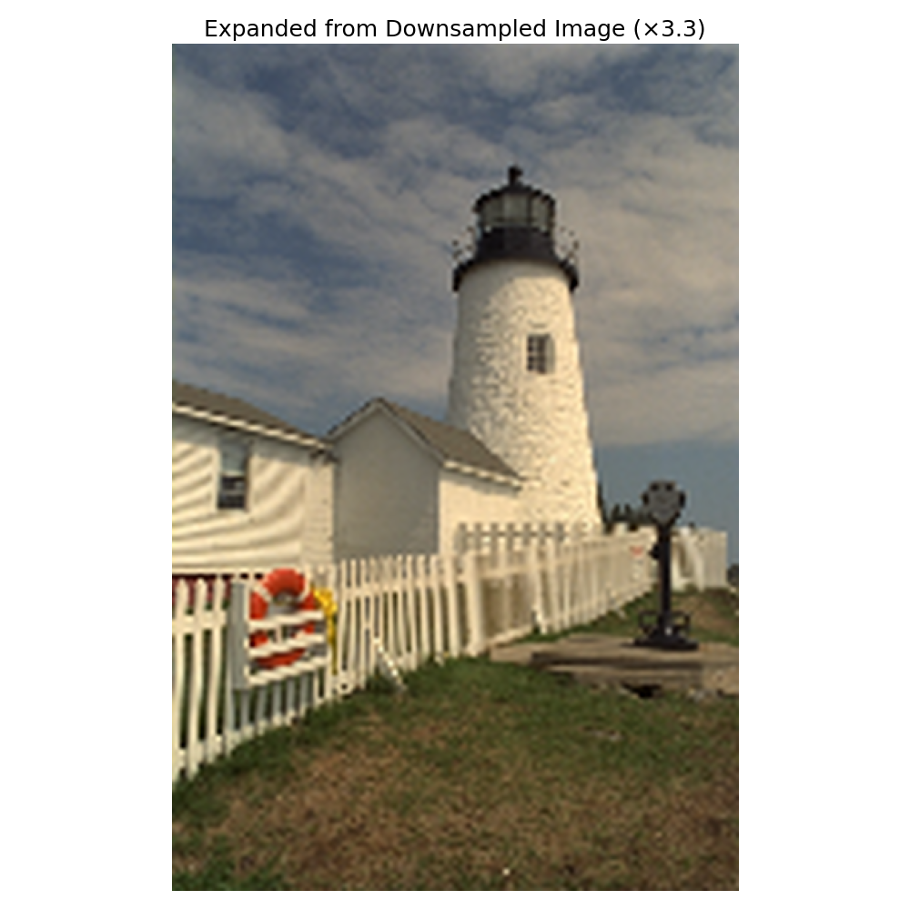
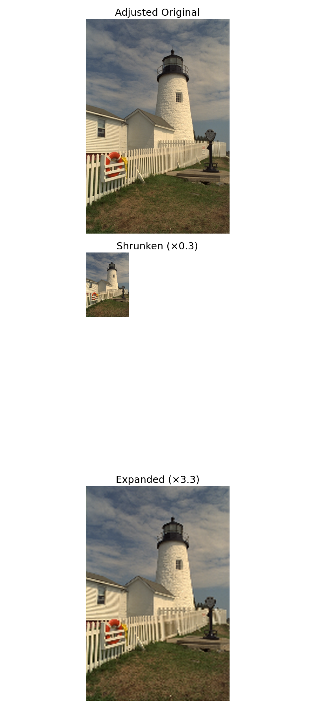
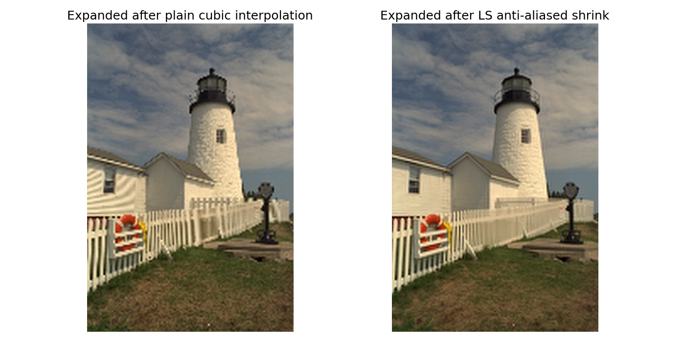

Resize Module#
Shrink and re-expand a 2-D RGB image with splineops, then discuss aliasing.
Imports and Helpers#
import numpy as np
import matplotlib.pyplot as plt
from urllib.request import urlopen
from PIL import Image
from scipy.ndimage import zoom as ndi_zoom # only for the *first* quick shrink
from splineops.utils.image import adjust_size_for_zoom # makes dimensions compatible with the zoom factor
from splineops.resize import resize # core N-D spline resizer
plt.rcParams.update({
"font.size": 14,
"axes.titlesize": 18,
"axes.labelsize": 16,
})
# Helper to resize RGB image
def resize_rgb(
img: np.ndarray,
zoom: float,
*,
method: str = "cubic",
) -> np.ndarray:
"""
Resize an H×W×3 RGB image with splineops.resize.resize (channel-wise).
Parameters
----------
img : ndarray, shape (H, W, 3), values in [0, 1]
zoom : float
Isotropic zoom factor (same for H and W).
method : str
One of the splineops presets, e.g. "linear", "cubic",
"cubic-fast_antialiasing", "cubic-best_antialiasing", ...
Returns
-------
out : ndarray, shape (H', W', 3), float64 in [0, 1]
"""
if img.ndim != 3 or img.shape[2] != 3:
raise ValueError("resize_rgb expects an H×W×3 RGB array")
# Normalize zoom to (z_h, z_w) for the 2-D resize calls
zoom_hw = (float(zoom), float(zoom))
channels = []
for c in range(img.shape[2]):
ch = resize(
img[..., c],
zoom_factors=zoom_hw,
method=method,
)
channels.append(ch)
out = np.stack(channels, axis=-1)
return np.clip(out, 0.0, 1.0)
Load and Normalize an Image#
url = "https://r0k.us/graphics/kodak/kodak/kodim19.png"
with urlopen(url, timeout=10) as resp:
img = Image.open(resp)
data = np.asarray(img, dtype=np.float64) / 255.0 # H × W × 3, range [0, 1]
# 1) Quick down-size so the notebook images aren't huge
initial_shrink = 0.8
data_small = ndi_zoom(data, (initial_shrink, initial_shrink, 1), order=1)
# 2) Choose the demo shrink factor and make dimensions "zoom-friendly"
shrink_factor = 0.3
adjusted = adjust_size_for_zoom(data_small, shrink_factor) # still float64 [0, 1]
adjusted_uint8 = (np.clip(adjusted, 0.0, 1.0) * 255).astype(np.uint8)
# 3) Shrink with splineops (channel-wise)
shrunken_f = resize_rgb(
adjusted, # float64 [0, 1]
shrink_factor,
method="cubic", # plain cubic interpolation (no anti-aliasing)
)
# Convert to uint8 for display & composition
shrunken = (np.clip(shrunken_f, 0.0, 1.0) * 255).astype(np.uint8)
# Put the shrunken image on a white canvas the size of *adjusted*
H_adj, W_adj, _ = adjusted_uint8.shape
canvas = np.full_like(adjusted_uint8, 255)
canvas[: shrunken.shape[0], : shrunken.shape[1]] = shrunken
# 4) Re-expand to the original adjusted size (back to float [0, 1])
expanded = resize_rgb(
shrunken.astype(np.float64) / 255.0,
1.0 / shrink_factor,
method="cubic",
)
expanded = np.clip(expanded, 0.0, 1.0)
Expanded from Downsampled#
We first show the final expanded image at large scale. This helps Sphinx generate a visually useful thumbnail and lets users preview the aliasing artefacts up front.
plt.figure(figsize=(10, 10)) # Tune size for thumbnail quality
plt.imshow(expanded)
plt.title(f"Expanded from Downsampled Image (×{1/shrink_factor:.1f})", fontsize=18)
plt.axis("off")
plt.tight_layout()
plt.show()

Aliasing#
We go through the stages of shrinking the image and then expanding it. Note the wave-like artefacts in the expanded image: classic aliasing. When we shrink below the Nyquist limit, high-frequency detail folds back into lower frequencies. Upsampling cannot recover the lost detail, so those aliased components become Moiré-style patterns. A proper workflow would low-pass filter before down-sampling, but here we purposely show the artefacts to illustrate the point.
fig, axes = plt.subplots(3, 1, figsize=(8, 18))
axes[0].imshow(adjusted_uint8)
axes[0].set_title("Adjusted Original")
axes[0].axis("off")
axes[1].imshow(canvas)
axes[1].set_title(f"Shrunken (×{shrink_factor})")
axes[1].axis("off")
axes[2].imshow(expanded)
axes[2].set_title(f"Expanded (×{1/shrink_factor:.1f})")
axes[2].axis("off")
plt.tight_layout()
plt.show()

Least-Squares shrink/expand (anti-aliased)#
Now we repeat the same shrink/expand pipeline, but this time we use the Least-Squares projection variant when shrinking:
“cubic-best_antialiasing” applies a proper low-pass filter before down-sampling, which strongly reduces aliasing.
For the expansion step, plain cubic interpolation is enough; the important part is that the shrink was anti-aliased.
ls_shrunken_f = resize_rgb(
adjusted,
shrink_factor,
method="cubic-best_antialiasing", # LS projection, degree 3
)
ls_shrunken = (np.clip(ls_shrunken_f, 0.0, 1.0) * 255).astype(np.uint8)
ls_expanded = resize_rgb(
ls_shrunken.astype(np.float64) / 255.0,
1.0 / shrink_factor,
method="cubic", # standard cubic interpolation for upsampling
)
ls_expanded = np.clip(ls_expanded, 0.0, 1.0)
fig, axes = plt.subplots(1, 2, figsize=(14, 7))
axes[0].imshow(expanded)
axes[0].set_title("Expanded after plain cubic interpolation")
axes[0].axis("off")
axes[1].imshow(ls_expanded)
axes[1].set_title("Expanded after LS anti-aliased shrink")
axes[1].axis("off")
plt.tight_layout()
plt.show()

Total running time of the script: (0 minutes 2.496 seconds)